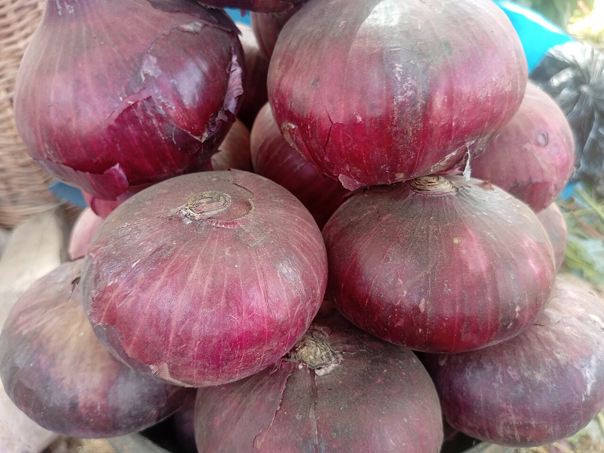

Légume
Oignon
Allium cepa — bulbe de conservation
- Cycle 90 à 150 jours selon variété et saison
- Mise à jour 2026-10-25
- Niveau de confiance partiel

Présentation et utilisations
Bulbe qui se conserve plusieurs mois : il permet de vendre après la récolte, quand les prix montent. Demande une terre fine, un repiquage soigné et un séchage rigoureux.
Climat et sols
Sol léger, meuble, sans cailloux, pH 6 à 7. Bonne exposition. Éviter les sols lourds et les parcelles engraissées au fumier frais (pourriture du bulbe).
Variétés adaptées
Variétés de jours courts adaptées à la zone tropicale, à bulbe rouge ou jaune. Le choix dépend du marché visé : demander la liste aux semenciers locaux ou à l'ANADER.
Calendrier cultural
Pépinière 4 à 6 semaines, repiquage en début de saison sèche avec irrigation, récolte 3 à 5 mois après repiquage. Le bulbe se forme quand les jours sont courts et la température douce.
Préparation du terrain
Travail fin du sol sur 20 cm, planches plates ou légèrement surélevées. Fumure organique bien mûre, incorporée 3 semaines avant.
Semis et plantation
Semis dense en pépinière, repiquage à 10-15 cm entre plants et 20-25 cm entre rangs, collet au niveau du sol (enterré = pourriture, trop haut = verse).
Entretien, fertilisation, irrigation
Sarclages manuels (racines superficielles), irrigation régulière puis arrêt 2 à 3 semaines avant récolte. Pas de binage profond.
Engrais : quoi, combien, quand
L'oignon aime le phosphore et le potassium, et redoute l'azote tardif : il retarde la maturation et abîme la conservation.
| Apport | Dose | Quand | Comment |
|---|---|---|---|
| OrganiqueCompost mûr | 15 à 20 t/ha | 3 semaines avant repiquage | Incorporé superficiellement |
| MinéralPhosphore (P2O5) | 50 à 80 kg/ha | Avant repiquage | Enfoui sur la planche |
| MinéralAzote (N) | 60 à 90 kg/ha | 1/2 à la reprise, 1/2 un mois après | En bande, puis arrosage |
| MinéralPotassium (K2O) | 80 à 120 kg/ha | Au début de la bulbaison | En bande |
Doses par hectare. Arrêter tout apport azoté un mois avant la récolte.
Repères de fumure : ANADER
Maladies, ravageurs et prévention
Mildiou de l'oignon, pourriture du collet, thrips. Rotation, plants sains, éviter l'excès d'azote et l'humidité stagnante.
Récolte et post-récolte
Récolter quand 50 à 70 % des feuilles se couchent. Arracher par temps sec, laisser sécher sur le sol 2 à 3 jours, puis à l'ombre ventilée 2 à 3 semaines.
Conservation et transformation
Local sec et ventilé, en filets ou en tresses, collet bien sec. Le bulbe qui a fleuri (montée à graine) se conserve mal : l'écarter.
Coûts, rendements et débouchés
La valeur vient du stockage : vendre 1 à 3 mois après récolte paye souvent mieux que la vente immédiate, à condition d'avoir un local sec.
Tutoriel étape par étape
- Préparer une terre fine
L'oignon pousse dans une terre sans mottes ni cailloux : travailler sur 20 cm et casser les mottes avant de repiquer.
- Fumure mûre seulement
Jamais de fumier frais : il fait pourrir le bulbe. Compost mûr, incorporé 3 semaines avant le repiquage.
- Semer en pépinière
Semer dense, arroser matin et soir, éclaircir si besoin. Les plants sont prêts en 4 à 6 semaines, à la taille d'un crayon.
- Repiquer au bon niveau
Le collet affleure le sol : ni enterré (pourriture), ni flottant (verse). Tasser légèrement autour des racines.
- Arrêter l'eau avant la récolte
Deux à trois semaines avant, couper l'irrigation : le bulbe finit de mûrir et se conservera mieux.
- Récolter au bon signe
Quand les feuilles se couchent à moitié. Arracher par temps sec, laisser sécher sur place une journée.
- Sécher puis stocker
Séchage à l'ombre ventilée 2 à 3 semaines, puis filets suspendus dans un local sec. Vérifier une fois par mois.
Sources, vérification et limites
- Base de connaissances interne · knowledge/agronomie.md, knowledge/techniques_agricoles.md (consulté le 2026-10-25)
- ANADER · Appui-conseil maraîchage (fiches techniques) (consulté le 2026-10-25) — consulter
Limites de cette fiche. Les rendements et les prix de l'oignon varient fortement avec la saison et le lieu de vente : aucune valeur n'est publiée ici. Les variétés doivent être choisies localement (jours courts).
Dernière mise à jour : 2026-10-25. Les prix, rendements et calendriers locaux ne sont mentionnés que lorsqu'ils sont documentés ; dans le doute, la fiche le dit.